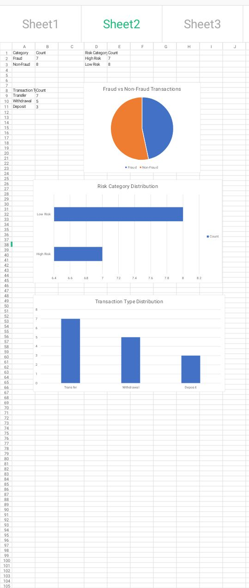

About Me
Research-driven scholar with a strong foundation in accounting, financial systems analysis, fraud investigation, educational publishing, and banking operations.
My research interests focus on Artificial Intelligence (AI), Machine Learning, Data Analytics, and Risk Modelling for financial fraud detection and prevention in emerging markets.
Research Focus
- Artificial Intelligence
- Machine Learning
- Financial Fraud Detection
- Risk Analytics
- Data Science
- FinTech
Research Projects
- Fraud Detection Using Machine Learning — Applying machine learning techniques to identify fraudulent transactions.
- BVN and Fraud Risk Analysis — Evaluating identity verification systems in reducing financial fraud.
- AI Framework for Financial Crime Detection — AI-driven fraud detection framework for emerging markets.
- Fraud Detection Analysis Using Transaction Pattern Monitoring — Practical fraud analytics project using simulated banking transaction data, risk scoring, and transaction monitoring.
Academic Publications
Fraud and Performance of Deposit Money Banks (2019)
Published Books
Books published under the author name Elizabeth Awodola.
The Awakening of the Enduring Vulture
Trouble Has No Bed
Doctor Piri
Fẹ́mi’s Rainbow World: Colours of Culture
Wakili the Foodie
Technical Skills
- Microsoft Excel (Advanced)
- Python (Beginner)
- Pandas
- NumPy
- Scikit-learn
- SQL
- Power BI (Learning)
- Tableau (Learning)
Fraud Analytics Project
Fraud Detection Analysis Using Transaction Pattern Monitoring
This project focuses on identifying potentially fraudulent financial transactions using transaction monitoring, risk scoring, and anomaly detection techniques.
- Fraud Detection Using Transaction Monitoring
- Risk Scoring Analysis
- High-Risk Transaction Identification
- Excel-Based Fraud Analytics

📥 Download Fraud Dataset (Excel)
View Project on GitHub
Credit Risk Analytics Project
Credit Risk Analysis Using Customer Financial Behaviour
This project focuses on assessing customer creditworthiness using financial behaviour, credit risk indicators, and data analytics techniques.
- Credit Risk Assessment
- Customer Financial Behaviour Analysis
- Risk Scoring
- Loan Default Prediction
Objective
To assess customer creditworthiness using financial behaviour, risk indicators, and data analytics techniques.
Dataset
- Customer ID
- Monthly Income
- Loan Amount
- Debt-to-Income Ratio
- Credit Score
- Loan Duration
- Repayment History
- Employment Status
- Risk Category
- Loan Default Status
Methodology
- Data cleaning
- Descriptive statistics
- Credit behaviour analysis
- Risk scoring
- Default prediction analysis
Credit Risk Rules
- Credit Score below 50 = High Risk
- Debt-to-Income Ratio above 40% = High Risk
- Loan Default Status = Defaulted Customer
Tools Used
- Microsoft Excel
- Data Analytics
- Risk Scoring
- Python (Learning)
Contact
Research & Academic Enquiries:
olueliawodola@yahoo.com
Publishing & Professional Enquiries:
awobodglobalpublications@gmail.com
GitHub:
Elizabeth-pub